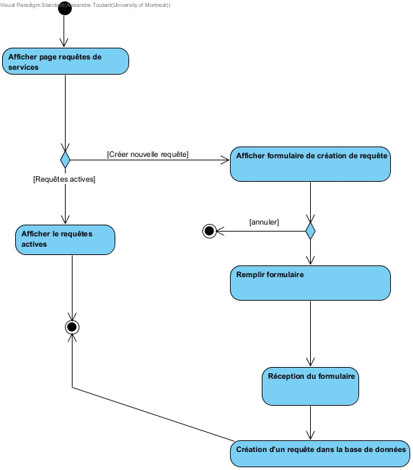
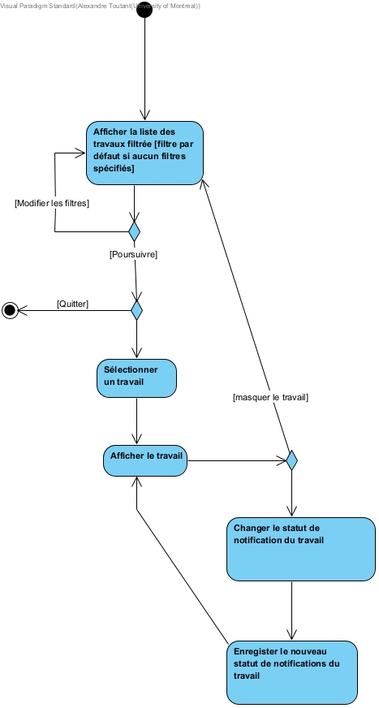
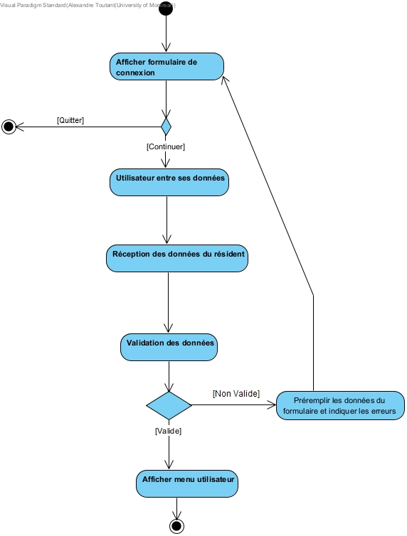
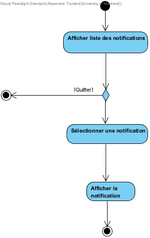
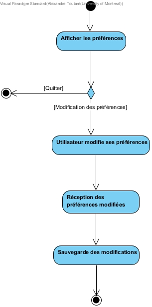
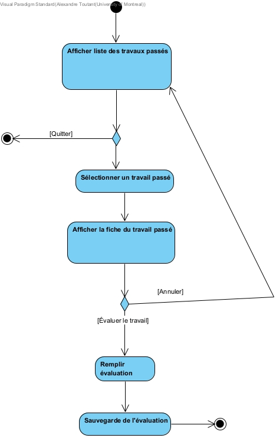
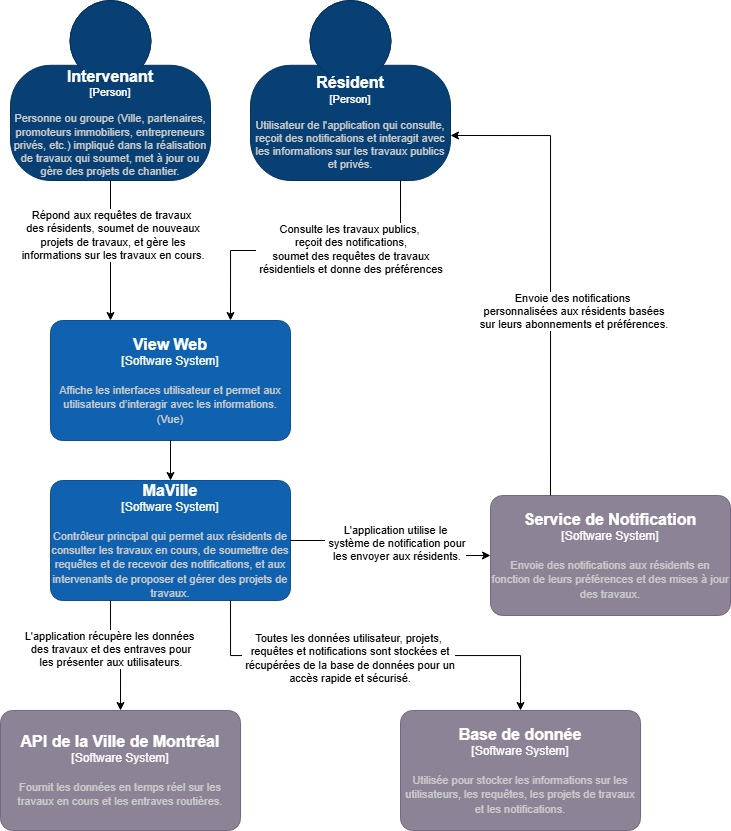
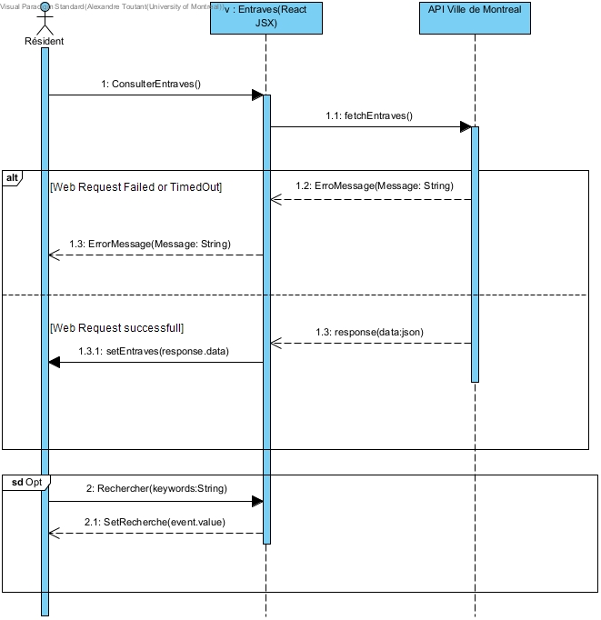
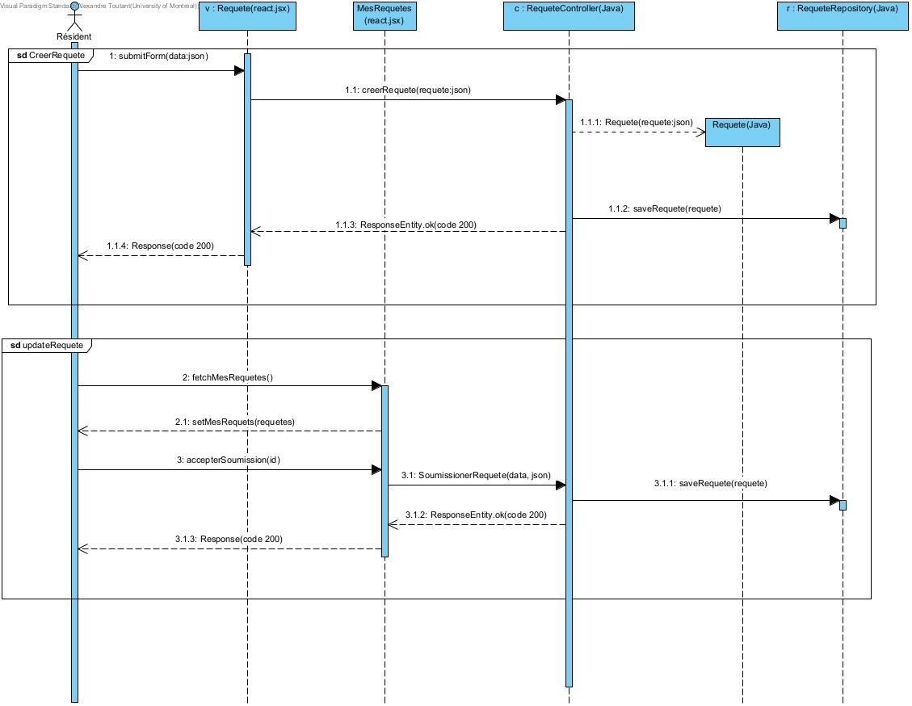
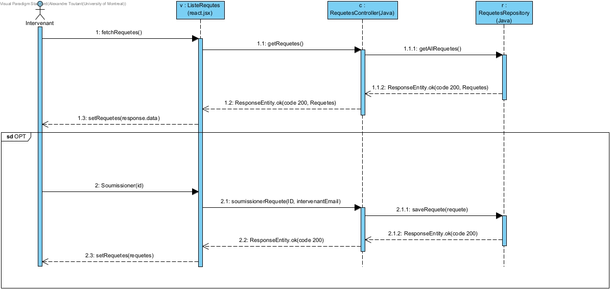

Cadre du projet
Introduction
Les citoyens de Montréal en ont assez d'être constamment surpris par les travaux qui surgissent un peu partout dans la ville, ou encore par les infrastructures qui ne sont jamais réparées. Pour répondre à ce problème, nous avons développé une application appelée "MaVille". Cette application permet aux utilisateurs d'être informés des travaux en cours et à venir, tout en leur donnant la possibilité de signaler et d'influencer les problèmes qui affectent nos rues.
Échéancier
Alexandre a travaillé sur les diagrammes mis à jour (3h) et une grosse partie du code (15h).
Samuel a travaillé sur le code (10h), les tests (3h) et la documentation (1h)
Andrei a travaillé sur l'implémentation du design (15h) et la vidéo de présentation (3h)
Hypothèses (optionnel)
Nous envisageons de créer une application dotée d'une interface permettant à l'utilisateur de se connecter en tant que résident ou intervenant. Le résident pourra recevoir des notifications personnalisées concernant les travaux en cours ou à venir. Il aura également la possibilité de rechercher des travaux par rue bloquée ou par arrondissement concerné. De plus, il pourra remplir des formulaires destinés à la ville pour signaler des lieux nécessitant des réparations. L'application offrira également des fonctionnalités de planification participative et de signalement de problèmes. Quant à l'intervenant, il pourra soumettre de nouveaux projets de travaux et mettre à jour les informations des chantiers en cours.
Exigences
Après de nombreuses rencontres avec le client et une familiarisation avec les activités de recyclage et compostage, nous avons préparé un glossaire rassemblant les termes et expressions clés caractérisant l'environnement.
Glossaire
- Résident
- Utilisateur de l'application qui consulte, reçoit des notifications et interagit avec les informations sur les travaux publics et privés.
- Intervenant
- Personne ou groupe (Ville, partenaires, promoteurs immobiliers, entrepreneurs privés, etc.) impliqué dans la réalisation de travaux qui soumet, met à jour ou gère des projets de chantier.
- MaVille
- Application visant à améliorer la communication et la coordination des travaux publics et privés à Montréal.
- Chantier
- Lieu où sont réalisés des travaux publics ou privés.
- Info entraves et travaux
- Service qui informe les citoyens des entraves à la circulation et des travaux en cours dans la ville.
- Notification personnalisée
- Alertes envoyées aux résidents en fonction de leurs préférences et de leur localisation pour les informer des travaux à venir ou en cours.
- Planification participative
- Fonctionnalité permettant aux résidents de participer à la planification des travaux en donnant leur avis ou en soumettant des requêtes concernant les interventions.
- Requête de travail
- Demande soumise par un résident pour signaler un besoin d'intervention (ex. : réparation de trottoir, problème d’éclairage) à la Ville ou à un intervenant.
- Système de signalement
- Outil permettant aux résidents de signaler des problèmes liés aux travaux ou à l'état des infrastructures urbaines directement via l'application.
- Coordination des travaux
- Processus de gestion des projets de travaux pour minimiser les perturbations pour les résidents grâce à une planification optimisée et collaborative.
- Menu principal
- Interface de l’application présentant les options principales disponibles à l’utilisateur connecté, telles que consulter les travaux ou soumettre une requête.
- Gestion de projet de travaux
- Fonctionnalité permettant aux intervenants de soumettre, mettre à jour et gérer des informations sur les chantiers en cours ou à venir via l’application.
- Fermeture de route
- Blocage temporaire ou permanent d’une rue en raison de travaux ou d’événements, nécessitant des détours pour les automobilistes et les piétons.
- Courriel d'identification
- Adresse électronique utilisée par les résidents et les intervenants pour s'inscrire et se connecter à l'application.
- Mot de passe
- Code secret utilisé en complément du courriel d'identification pour accéder à l'application.
Cas d'utilisation
Notes à propos du diagramme
La ville de Montréal agit comme acteur secondaire
Scénarios
Scénario principal
- L'utilisateur ouvre l'application
- L'utilisateur choisit de se connecter
- L'utilisateur entre son courriel et son mot de passe
- Le système valide les données entrées
- Le menu principal s'affiche pour l'utilisateur
Scénarios alternatifs
Scénario principal
- L'utilisateur choisit l'item "Signaler un problème à la ville"
- L'utilisateur entre une description du problème et soumet le formulaire
- La demande est envoyé à un représentant de la ville de Montréal
- Le système affiche que la demande a été envoyée.
Scénario Principal
- L'utilisateur consulte la liste des travaux en cours ou à venir.
- L'utilisateur sélectionne un travail pour en voir les détails et informations spécifiques.
- Le système affiche l'adresse, le type de travail, la date de début, et la date prévue de fin.
- L'utilisateur peut revenir à la liste des travaux ou accéder au menu principal.
Scénarios Alternatifs
Scénario Principal
- L'utilisateur accède à la page de création de compte.
- L'utilisateur remplit les champs requis (nom, prénom, adresse e-mail, mot de passe, etc.).
- L'utilisateur soumet le formulaire de création de compte.
- Le système vérifie que les informations sont valides et que l'adresse e-mail n'est pas déjà utilisée.
- Le système active le compte de l'utilisateur et l'utilisateur est automatiquement connecté.
Scénario Principal
- L'utilisateur accède à la liste des travaux terminés auxquels il a été abonné ou qui l'intéressent.
- L'utilisateur sélectionne un travail terminé pour l'évaluer.
- Le système affiche les détails du travail (adresse, type de travail, date de fin).
- L'utilisateur attribue une note (étoiles ou note numérique) et peut ajouter un commentaire facultatif.
- L'utilisateur soumet son évaluation.
- Le système enregistre l'évaluation et affiche un message de confirmation à l'utilisateur.
Scénario Principal
- Le résident sélectionne l'option "Consulter mes notifications".
- Le système affiche une liste des notifications classées par date de réception, avec des détails sur chaque projet de travaux.
- Le résident clique sur une notification pour voir plus de détails sur le projet (type de travaux, rues affectées, date de début, etc.).
Scénarios Alternatifs
Scénario principal
- L'intervenant accède à la page de création de compte.
- L'intervenant saisit les informations requises.
- Le système vérifie que les informations sont valides et que l'adresse e-mail n'est pas déjà utilisée.
- Si les informations sont valides, le système crée un nouveau compte intervenant et confirme la création.
- L'intervenant est redirigé vers sa page.
Scénarios alternatifs
Scénario principal
- L'intervenant sélectionne l'option "Gérer mes projets" dans le menu.
- Le système affiche une liste des projets de travaux soumis par l'intervenant.
- L'intervenant sélectionne le chantier à mettre à jour.
- L'intervenant modifie les informations souhaitées (description, date de fin, statut, etc).
- Le système enregistre les modifications et confirme leur mise à jour.
Scénario principal
- L'intervenant sélectionne l'option "Soumettre un nouveau projet de travaux".
- L'intervenant saisit les informations requises.
- Si les informations sont valides et sans conflit, le système soumet le projet avec le statut prévu.
- L'intervenant reçoit une confirmation de soumission.
Scénarios alternatifs
Scénario principal
- L'intervenant sélectionne l'option "Consulter la liste des requêtes de travaux".
- Le système affiche une liste des requêtes.
- L'intervenant applique les filtres souhaités et parcourt les requêtes.
- Si l'intervenant souhaite postuler, il soumet sa candidature en spécifiant une date de début et de fin des travaux.
- Le système enregistre la candidature et la soumet pour approbation.
Scénarios alternatifs
Scénario principal
- Le résident sélectionne l'option "Consulter mes requêtes de service".
- Le système affiche une liste de toutes les requêtes de service soumises par le résident avec leur état.
- Le résident sélectionne une requête pour consulter les détails.
- Le résident consulte les détails et peut retourner à la liste des requêtes.
Scénarios alternatifs
Scénario principal
- Le résident sélectionne l'option "Modifier mes préférences".
- Le système affiche les préférences actuelles du résident.
- Le résident modifie les préférences désirées.
- Le résident confirme les modifications.
- Le système enregistre les nouvelles préférences et affiche un message de confirmation.
Diagramme d'activités
Consulter requête de services
Consulter liste des travaux
Création d'un compte résident

Authentification d'un utilisateur
Consulter les notifications
Modifier préférences du résident
Évaluation d'un travail passé
Analyse
Risques
-
Manque de mise à jour des informations des travaux : Cela pourrait entraîner la désinformation des résidents.
Solution : Mettre en place un rappel régulier pour les intervenants. -
Difficulté d’adoption de l’application par les résidents : Certains utilisateurs pourraient être réticents à utiliser une nouvelle plateforme.
Solution : Campagnes de sensibilisation et tutoriels simples. -
Problèmes de compatibilité avec les appareils plus anciens : Certains résidents peuvent avoir des systèmes d'exploitation plus anciens qui ne sont pas compatibles avec
l'application.
Solution : Tester l'application sur une large gamme de dispositifs et de systèmes d'exploitation. -
Problèmes de confidentialité des données : Les informations personnelles des utilisateurs pourraient être compromises.
Solution : Utilisation d’un cryptage puissant et conforme aux normes de protection des données. -
Difficultés à maintenir l'application sur le long terme : Le coût de maintenance de l'application pourrait devenir trop élevé.
Solution : Allouer un budget annuel pour la maintenance et les améliorations de l'application et prévoir un plan de maintenance à long terme (des mises à jour de sécurité et des ajouts fonctionnels en fonction des retours des utilisateurs).
Besoins non-fonctionnelles
- Facilité d'utilisation: L'application doit être simple et intuitive pour les utilisateurs de tous âges.
- Disponibilité continue: L'application doit être accessible 24 heures sur 24 et 7 jours sur 7, avec un taux de disponibilité de 99,9%.
- Temps de réponse rapide: L'application doit être capable de répondre en moins de 2 secondes aux requêtes des utilisateurs.
- Accessibilité universelle: L'application doit être adaptée pour que les personnes avec un handicap puissent l'utiliser efficacement
- Compatibilité multiplateforme: L'application doit être compatible autant avec les appareils mobiles que les ordinateurs fixes.
Besoins matériels
Les besoins matériels incluent une infrastructure serveurs cloud fiable, dotée de sauvegardes régulières, afin de garantir une disponibilité continue des services et la sécurité des données utilisateurs. Les utilisateurs, qu'ils soient sur ordinateur de bureau, portable, ou appareil mobile, doivent disposer d’un appareil capable d’effectuer des tâches de base. Une connexion internet adéquate est essentielle pour accéder aux fonctionnalités en ligne et recevoir des notifications en temps réel. Enfin, l'application sera disponible sur la plupart des systèmes d'exploitations standards et populaires.
Solution de stockage
Les données sont stockées dans des fichiers JSON, offrant une structure simple et accessible pour le développement initial. Cette solution sera toutefois progressivement remplacée par une base de données SQL dans les prochaines phases du projet, permettant de mieux gérer les relations entre utilisateurs, projets de travaux, et notifications. Avec l’ajout de sauvegardes régulières et d’un cache temporaire, l'infrastructure garantira une sécurité et une efficacité.
Solution d'intégration
L'utilisation du contrôleur TravauxAPI qui gère les appels aux APIs externes pour les données de travaux et d'entraves. Nous utilisons un client RestTemplate pour effectuer les appels à l’API. En cas de défaillance ou d’indisponibilité de l’API de Montréal, le client gère les erreurs et réessaie automatiquement de récupérer les données.
Architecture
C4 Model
Choix du design
Le design de l’application avec une architecture MVC repose sur l’abstraction, un couplage faible et une cohésion élevée pour garantir une architecture modulaire et évolutive. L’abstraction permet de séparer les responsabilités en définissant des classes distinctes, telles que User et Requete, qui encapsulent chacune un aspect précis du domaine d'application. Le couplage faible est favorisé par l’utilisation de "repositories", comme UserRepository et RequeteRepository, qui isolent l’accès aux données. De plus, des contrôleurs dédiés, tels que RequeteController et AuthController, coordonnent les interactions entre les modèles et les vues sans gérer directement la logique fonctionnelle. Cette structure permet de tester chaque composante de manière isolée et de faciliter l'intégration de nouvelles API externes, assurant ainsi une flexibilité pour faire évoluer l’application tout en favorisant l’interopérabilité et la maintenabilité.
Diagrammes
Diagrammes de classes
À la demande de l'enseignant, comme notre projet utilise un framework web, les diagrammes de classes suivants ne représentent que le backend Java du projet. Les classes utilitaires du framework ne sont pas présentes.
Ce diagramme représente les classes du backend Java représentants les différents modèles de l'architecture MVC
NB: due à la nature de notre prototype qui utilise un Framework REST web, bien que les classes semblent séparées du reste du projet, elles sont utilisées par les classes
utilitaires du projet.
Ce diagramme représente les classes du backend Java représentants les différents controlleurs et repositories (utilitaire de stockage de données) de l'architecture MVC
NB: due à la nature de notre prototype qui utilise un Framework REST web, bien que les classes semblent séparées du reste du projet, elles sont utilisées par les classes
utilitaires du projet.
Diagramme de séquence Consulter Entraves
Diagramme de séquence Soumettre Requête de Travail
Ce diagramme présente l'action de créer une requête dans le premier frame. Le deuxième frame représente l'action de faire le suivi de la requête. Ce même processus représente toute action de mise à jour telle associer un intervenant ou fermer la requête.
Diagramme de séquence Consulter les requêtes de travail
Ce diagramme présente l'action de consulter la liste des requêtes de travail par un intervenant. La deuxième section optionnelle représente son action de soumissioner.
Prototype
Toutes les informations concernants l'exécution du protype se retrouvent dans le README.
Les tests unitaires sont dans le fichier : MaVille - prototype 2/demo/src/test/java/com/example/demo/controllersTest/AuthControllerTest.java
Maven est utilisé automatiquement par notre Framework, ainsi les tests sont exécutés automatiquement lors de démarrage du serveur.
Vous pouvez voir la sortie de ceux-ci dans la console.
De plus, il y a un rapport de tests téléchargeable qui se retrouve dans les artéfacts de Github Actions qui se crée à chaque commit sur la branche Main
Documentation JavaDoc:
Pour consulter la documentation localement:
Ouvrez le fichier /MaVille - prototype 2/demo/target/site/apidocs/index.html.
La documentation est également accessible en ligne via le lien suivant:
JavaDoc
JaCoCo:
Pour consulter JaCoCo localement:
Ouvrez le fichier /MaVille - prototype 2/demo/target/site/jacoco/index.html.
JaCoCo est également accessible en ligne via le lien suivant:
JaCoCo